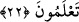

istenmiştir.
Sizden öncekiler de sizin gibi vardılar. Fakat gelip geçtiler. Yaşayıp yok oldular. Bu
sebeble, siz de dönüp varacağınız yeri asla unutmayın. Allah’a karşı kusur işlemekten
vazgeçin. Böylece Allah Teâlâ’ya komşu olmayı gerektiren, felâh ve hidâyetle kurtuluşa
eren muttakîlerin yoluna girmeyi ümid edin.
Kulun, Allah Teâlâ’dan istekte bulunması ve O’ndan iyilikler umması vâcibtir. Çünkü
kerem sâhibi olan Allah, kendisinden istenilen bütün iyilikleri yapar.
Önceden geçen ve sonradan gelen herkes takvâ ile emrolundukları halde âyette
“umulur ki takvâ sâhibi olursunuz” buyurularak tağlîb yoluyla sadece muhâtablar söz
konusu edilmişlerdir. el-Kevâşî isimli eserde bu nükteye yer verilmiştir.
Allah’ın dışında kalan herşeyden uzak durma mânâsına gelen takvâ, sâliklerin
varabileceği en son derecedir. Âbidlerin ibâdetlerine aldanmayıp sürekli korku ve ümid
arasında olmaları gerekir. Nitekim Allah Teâlâ Hazretleri: “Onlar korkarak ve
umarak Rabb’lerine duâ ederler.” (es-Secde, 32/16) ve “O’nun merhametini
umarlar.” (el-İsrâ, 17/57) buyurarak, kulların kendisine karşı hangi halde bulunmaları
gerektiğini bildirmiştir.
Sa’dî (k.s.) şöyle demiştir:
Eğer adamsan, adamlığını söyleme,
Çünkü her süvârî, topu ve atı ileri götüremez.
Yâni ibâdeti sebebiyle her âbidin îmânı hâlistir, denilemez.
22. O Rab ki, yeri sizin için bir döşek, göğü de (kubbemsi) bir tavan yaptı.
Gökten su indirerek onunla, size besin olsun diye (yerden) çeşitli ürünler çıkardı.
Artık bunu bile bile Allah’a şirk koşmayın.
Dil bilimcilerinin verdiği bilgiye göre “Arz” (yeryüzü), âlemin yaygısıdır. Onun yaygı
olarak değerlendirilmesi denizlerle çevrili olmasındandır. Yeryüzünün, içerisinde insan
yaşayan kısmının ortası Kâ’be’dir. Fakat yeryüzü bir bütün olarak ele alındığında
ortası, yaz ve kış gece ile gündüzün sürekli eşit olduğu ve bu eşitliğin asla bozulmadığı
yer olan ekvatordur. el-Melekût adlı eserde bu bilgiler yeralmaktadır.
Hz. Ali (r.a.)’nin şöyle dediği rivâyet olunmuştur: “İçinde bulunan her şeyi yiyip yok
ettiği için yeryüzüne “arz” denilmiştir. Bir diğer görüşe göre yeryüzü, ayak ve
tırnaklarla çiğnendiği için “arz” ismini almıştır.
Tabîatının çukur olmayı gerektirmesine rağmen, yeryüzünün “firâş” (döşek)